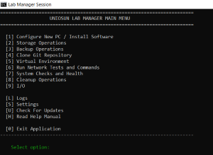

A lightweight tool for managing computing lab environments at FOCIT, UNIOSUN.
Easily manage lab workstations, monitor system health, run backups, organize files, and more — all from one tool.
Download v2.1.0
Scan lab machines for software, hardware status, disk usage, and generate health reports.
Identify large files, clean temporary data, and free up space on lab computers.
Create encrypted or incremental backups of important project folders with ease.
Clone repositories and pull updates directly from the tool without opening a terminal.
Discover devices on the local network and collect telemetry from lab machines.
Simple installer, minimal dependencies, and designed specifically for lab environments.
Improved listener security, better path handling, installer support.
Major update — added inventory system, cleanup tools, and UDP agent.
Added backup system and basic Git integration.